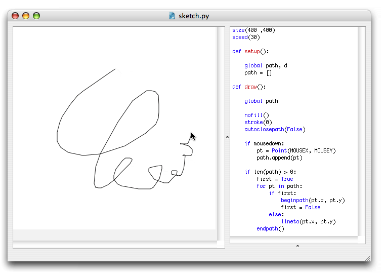

PlotDevice is designed to output PDF documents or images, when you want to do all sorts of moving and interactive things you’re probably better off with a tool like Processing.
However, if you do want to experiment with interactivity in PlotDevice, there’s some built-in
support that might be of help to you. This assumes you already know how to make an animation in PlotDevice.
In a PlotDevice animation, there are three predefined variables that store the current position of the mouse cursor and the state of the mouse button:
You would typically use the mousedown variable in an if-statement:
if mousedown:
# do stuff when the mouse is pressed
else:
# do stuff when the mouse isn't pressed
Three predefined variables store the keys a user is pressing during a PlotDevice animation:
The key and keycode variables are updated as long as any key is being pressed.
KEY_UP, KEY_DOWN_ KEY_LEFT, KEY_RIGHT, KEY_BACKSPACE contain the keycodes for the arrow keys
and the backspace key.
A fun example is this little sketch application. Simply run the code and draw some stuff on the canvas! 
size(400 ,400)
speed(30)
def setup():
global path, d
path = []
def draw():
global path
nofill()
stroke(0)
autoclosepath(False)
if mousedown:
pt = Point(MOUSEX, MOUSEY)
path.append(pt)
if len(path) > 0:
first = True
for pt in path:
if first:
beginpath(pt.x, pt.y)
first = False
else:
lineto(pt.x, pt.y)
endpath()